[successivo] [precedente] [inizio] [fine] [indice generale] [hall of fame] [indice analitico] [parte]
11.1.1) Come si installano i moduli audio ALSA?
ALSA è un sistema diverso rispetto ad OSS. Requisito essenziale è che il kernel preveda il supporto dell'audio, ma non in modo monolitico. La compilazione e l'installazione prevede nell'ordine la seguente procedura:
Dalla directory dei dispositivi eseguire:
# ./configure --help[Invio]
per ottenere un aiuto sulla configurazione;
per una scheda PCI si darà il seguente comando:
# ./configure --sequencer=yes; make; make install[Invio]
fatto questo, si eseguirà lo script:
# ./snddevices[Invio]
sia per le librerie che per i programmi di utilità si dovrà eseguire:
# ./configure; make; make install[Invio]
Prima di caricare il modulo della propria scheda si deve tenere presente che non vi devono essere già altri moduli audio caricati e bisogna attivare con Isapnptools le schede ISA (se non si è fatta la scelta --with-isapnp=yes). Fare riferimento a: 14.9.1.
in seguito si dovranno commentare le righe di /etc/conf.modules relative alle scelte effettuate tramite sndconfig o manualmente. (oppure scaricare tutti i moduli con lo script presente in: 14.9.1);
eseguire:
# modprobe nome_modulo[Invio]
per caricare la propria scheda, considerando che alcune schede richiedono parametri aggiuntivi come si legge nel file INSTALL posto nella directory dei driver;
Impostare il volume come descritto in 11.1.2.
Si tenga presente che ALSA è pienamente compatibile con OSS. Se infatti si volessero usare applicazioni non native ALSA, occorrerà caricare i moduli OSS tramite:
# modprobe snd-pcm1-oss[Invio]
# modprobe snd-mixer-oss[Invio]
Una volta attivata la scheda, si possono conservare le impostazioni con:
# alsactl store[Invio](1)
Queste ultime si potranno ripristinare con:
# alsactl restore[Invio]
11.1.2) Perché non si sente nessun suono dopo l'installazione dei driver ALSA?
Qualora dopo l'installazione dei driver ALSA non si riesca a sentire nulla, si deve ricordare che in maniera predefinita, il volume viene impostato a mute, quindi si deve impostare il mixer con:
# amixer set Master on[Invio]
# amixer set PCM on[Invio]
# amixer set Master 75%[Invio]
# amixer set PCM 75%[Invio]
In seguito all'esecuzione di questi comandi, si potrà usare il mixer che si desidera. Caricando inoltre snd-pcm1-oss, si potranno utilizzare anche i mixer di OSS, come ad esempio Aumix).
11.1.3) Come si alza il volume nelle macchine desktop e nei portatili se si utilizzano i driver ALSA?
Come già descritto nella LDR 11.1.2 dopo avere installato ALSA, il volume è nullo. Ecco uno script (tratto da <http://www.sr.bham.ac.uk/~sjt/opl3sa2.html>) per i computer casalinghi e quelli portatili:
--Desktop-- #!/bin/sh AMIX='/usr/bin/amixer -q' $AMIX set Master 100% unmute $AMIX set PCM 85% unmute $AMIX set 'Input Gain' 40% $AMIX set Line 40% unmute capture
--Laptop-- /usr/bin/amixer -q set Master 90% unmute /usr/bin/amixer -q set PCM 90% unmute /usr/bin/amixer -q set Line 60% unmute capture /usr/bin/amixer -q set CD 60% unmute /usr/bin/amixer -q set 'Input Gain' 50% /usr/bin/amixer -q set FM 60% unmute
11.1.4) Come si regolano in maniera definitiva i toni del mixer?
Spesso, pur regolandolo mediante i mixer appositi, il volume non resta costante. A tal proposito è possibile provare ad utilizzare Aumix, salvando le impostazioni con S. Questo comando creerà il file .aumixrc. Occorrerà allora inserire nei file letti dal sistema all'avvio (rc.local, .bash_profile, ecc.) il seguente comando:
# aumix -L percorso/.aumixrc[Invio](2)
11.1.5) Come si possono eliminare le segnalazioni acustiche di sistema?
Si può modificare il file /etc/inputrc oppure ~/.inputrc e inserire la riga:
# set bell-style none[Invio]
Con:
# set bell-style visible[Invio]
si fa il contrario.
Un altro modo consiste nell'impartire il seguente comando (Bash):
# echo -en "\33[11;00]"[Invio]
che emette il suono per zero ms.
11.2.1) Non riesco a montare i CD audio!
I CD audio non si possono montare perché non hanno un file system. Devi inserirli e ascoltarli, ad es. con cdplay o applicativi analoghi.
11.3.1)
Quali sono le applicazioni da utilizzare per creare file .mp3 partendo da brani presenti su CD?
Per creare file .mp3 partendo da CD-ROM, si dovranno utilizzare:
programmi che eseguono estrazione digitale delle tracce audio in file .wav o .cdr;
programmi che convertono i file .wav o .cdr in file file .mp3;
programmi che possono fare ambedue i processi sopra descritti.
Programmi che eseguono estrazione digitale delle tracce audio in file .wav o .cdr;
programmi che convertono i file .wav o .cdr in file file .mp3;
programmi che possono fare ambedue i processi sopra descritti
cdr (10);
Dac2mp3 (11);
pktrip (12);
rip (13);
|
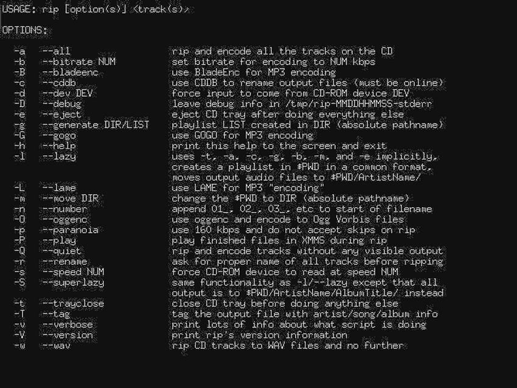 Figura 11.1. rip. |
RipEnc (14);
T.E.A.R. (15);
The One Ripper (16);
|
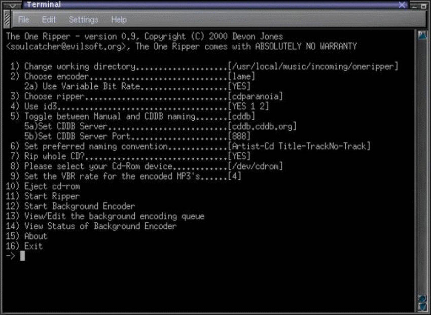 Figura 11.2. The One Ripper. |
Grip (17);
|
Figura 11.3. Grip. |
ripperX (18);
XMultiGrab (19);
|
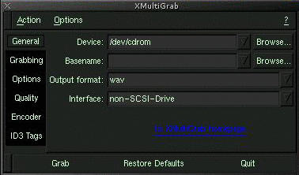 Figura 11.4. XMultiGrab. |
GTKmp3make (20);
|
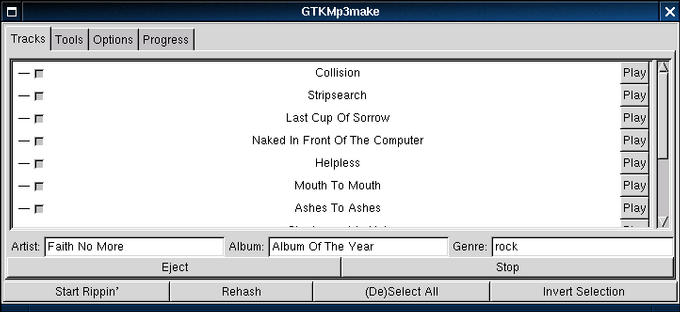 Figura 11.5. GTKmp3make. |
|
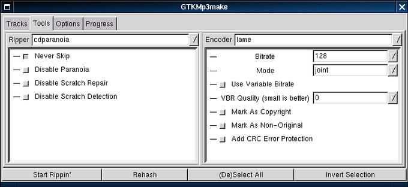 Figura 11.6. GTKmp3make. |
|
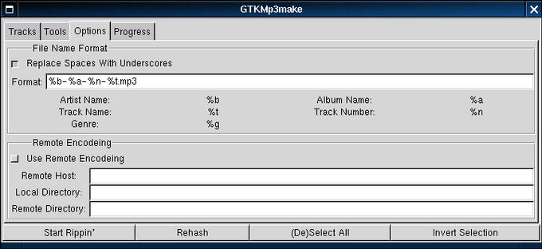 Figura 11.7. GTKmp3make. |
|
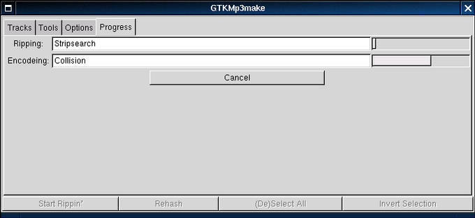 Figura 11.8. GTKmp3make. |
SimpleCDR (21);
|
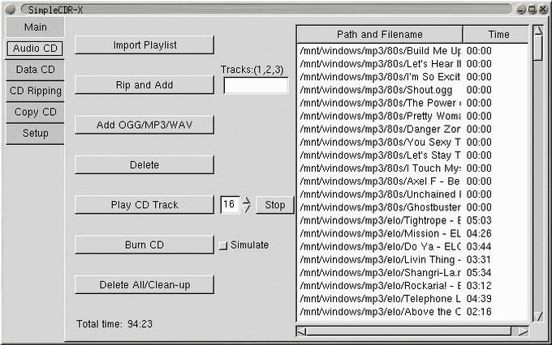 Figura 11.9. SimpleCDR. |
|
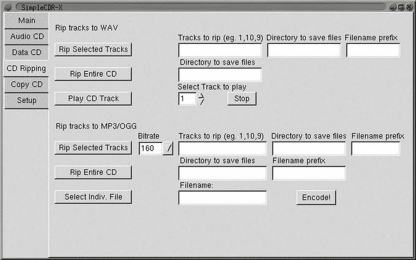 Figura 11.10. SimpleCDR. |
|
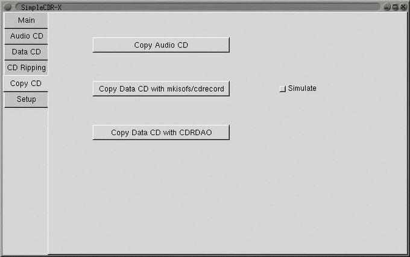 Figura 11.11. SimpleCDR. |
|
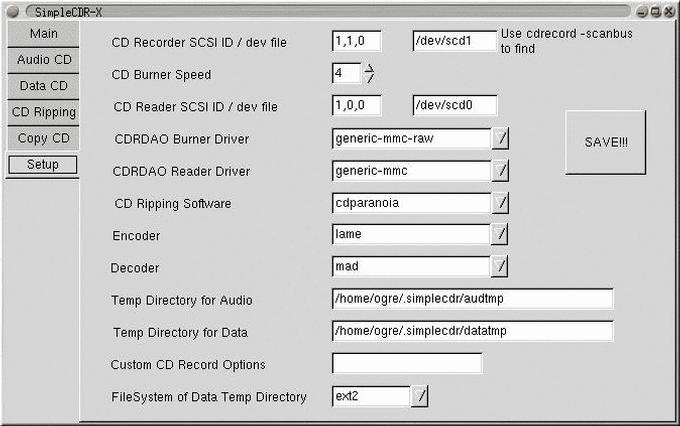 Figura 11.12. SimpleCDR. |
YaRET (22);
11.3.2)
Si possono creare file .mp3 dai brani presenti in un CD-ROM mediante un comodo script?
Qualora non si voglia utilizzare uno degli applicativi adatti allo scopo (vedere LDR 11.3.1), si potrà creare un semplice script (makemp3 di The Hitman):
---------------------------- #!/bin/bash cd ~ for T in $*; do cdparanoia -w -Y $T temp.wav gogo temp.wav $T.mp3 rm -f temp.wav done ----------------------------
Come si vede è necessario che siano installati i programmi Cdparanoia e GOGO. La sintassi di questo script è semplice:
$ makemp3 traccia [traccia][Invio](23)
Es.:
$ makemp3 1 5 7[Invio]
Questo comando provvederà ad estrarre in formato digitale le tracce 1,5 e 7. I file .wav che ne derivano saranno trasformati in .mp3 mediante GOGO. I file risultanti saranno rispettivamente 1.mp3, 5.mp3, 7.mp3. Ad ogni traccia analizzata, il file .wav corrispondente sarà cancellato.
11.3.3)
Come si possono leggere i tag (marcatori) ID3 dei file .mp3?
Per leggere i tag (marcatori) ID3 dei file .mp3 possiamo utilizzare applicativi quali MP3info (24); .
1) comando che immagazzina le impostazioni nel file /etc/asound.conf
2) dove percorso è il percorso in cui aumix ha salvato il file di configurazione (.aumixrc)
3) Cdda2wav GPL
4) Cdparanoia GPL
5) LAME GPL
6) BladeEnc LGPL
7) Parallel Bladeenc LGPL
8) NotLame MP3 Encoder GPL
9) GOGO LGPL
10) cdr GPL
11) Dac2mp3 GPL
12) pktrip GPL
13) rip GPL
14) RipEnc GPL
15) T.E.A.R. GPL
16) The One Ripper GPL
17) Grip GPL
18) ripperX GPL
19) XMultiGrab GPL
20) GTKmp3make LGPL
21) SimpleCDR GPL
22) YaRET GPL
23) dove traccia è il numero della traccia da estrarre e da trasformare in .mp3
24) MP3info GPL
Dovrebbe essere possibile fare riferimento a questa pagina anche con il nome audio.html
[successivo] [precedente] [inizio] [fine] [indice generale] [hall of fame] [indice analitico]